C'est l'une des vidéos les plus demandées sur ma chaîne. Comment transformer des designs Figma en de véritables applications et sites web en quelques minutes. Si vous ne connaissez pas Figma, c'est l'application que les meilleurs designers utilisent pour esquisser et prototyper des interfaces de classe mondiale. En gros, les plans sous les applications que vous utilisez tous les jours. Mais voici le plus fou. Avec l'IA et le "vibe coding", nous pouvons désormais prendre ces plans et les transformer instantanément en applications entièrement fonctionnelles.
Interface & Outils : Interface web de Figma (Figma Make / Community)
Contenu textuel & Code : Galerie de projets et de prototypes communautaires Figma affichant des aperçus graphiques et des titres d'applications.
Action / Démonstration : Présentation visuelle de la plateforme Figma et de ses fonctionnalités de prototypage et de création d'applications.
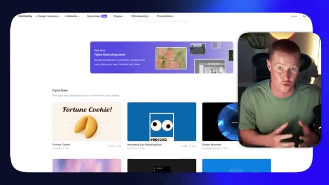
🔍 AgrandirEt dans cette vidéo, je vais vous montrer exactement comment faire, étape par étape. Très bien, allons-y. Très bien, les gars. Donc tout d'abord, nous allons commencer dans Figma. Et je vais vous montrer exactement comment prendre soit un modèle, soit un design préexistant que vous avez créé dans Figma, si vous êtes un designer Figma, et le transformer en une application Web entièrement fonctionnelle ou un site Web dans ce cas. Première chose, vous pouvez voir que nous avons accès à Figma ici.
Interface & Outils : Figma (navigateur web)
Contenu textuel & Code : Galerie de modèles de design et ressources de la communauté Figma (Templates and tools from Community)
Action / Démonstration : Navigation et sélection d'un modèle ou design préexistant dans l'interface de Figma
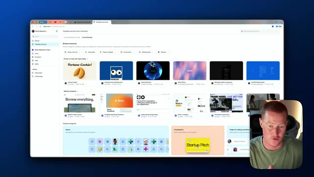
🔍 Agrandir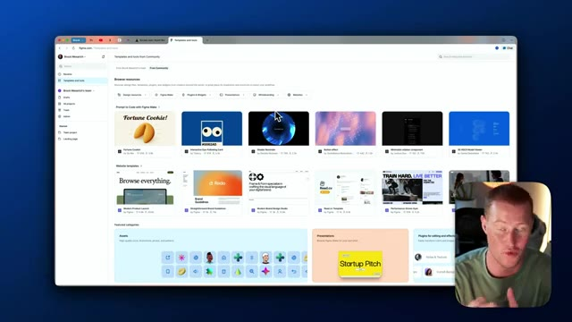
🔍 AgrandirNous avons un tas de modèles différents. Pour les besoins de cette vidéo, je vais vous montrer comment réellement implémenter un modèle au lieu de construire un design entièrement complet à partir de zéro avec Figma. Donc ce que je vais faire ici, c'est simplement faire défiler certains des modèles ici pour vous montrer comment les implémenter. Donc nous pourrions aller voir toutes ces choses différentes. Je vais parcourir les sites web et jetons juste un coup d'œil aux pages de destination rapidement afin que je puisse avoir une idée de ce que je vais essayer de transformer réellement en un site web fonctionnel.
Interface & Outils : Navigateur web affichant l'interface de Figma Community avec un encart vidéo du présentateur en bas à droite.
Contenu textuel & Code : Catalogue de modèles de design, bannières visuelles, catégories de ressources graphiques et kits d'interface utilisateur.
Action / Démonstration : Navigation et défilement à travers la galerie de modèles Figma pour sélectionner une ressource à implémenter.
Donc j'aime celui-ci pour un produit SaaS. Alors imaginez que nous ayons un produit SaaS que nous essayons de lancer. J'aime vraiment ce modèle. Laissez-moi y jeter un coup d'œil de plus près. Si je clique sur ce bouton de lecture ici en haut à droite de cet écran ici, je peux maintenant voir exactement à quoi ressemblera ce site web. Donc parcourez tout, vous savez, ça montre ce petit tableau de bord sympa ici.
Interface & Outils : Navigateur web affichant l'interface de Figma.
Contenu textuel & Code : Maquette de site web pour un produit SaaS, avec le titre "Browse everything." et des graphiques d'efficacité.
Action / Démonstration : Clic sur le bouton de lecture en haut à droite pour lancer l'aperçu du modèle de conception.
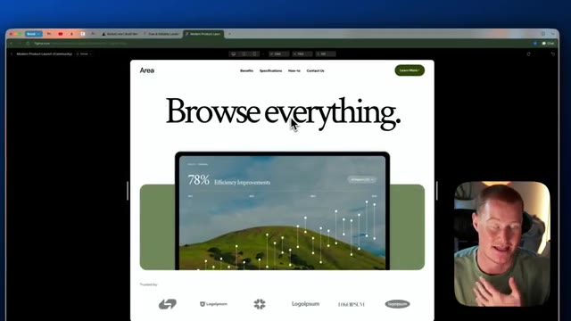
🔍 AgrandirJe veux dire, c'est un modèle qui a l'air vraiment solide pour un site web. Et ce que je veux faire, c'est essentiellement transformer ceci en un site web réellement fonctionnel où je pourrais cliquer sur les boutons et tout le tralala. Donc pour que je puisse réellement transformer ceci en un site web fonctionnel, ce que je dois faire, c'est venir ici et cliquer essentiellement sur cette partie juste ici, qui est la page d'accueil. Donc ce que je vais faire, je vais cliquer là-dessus et je vais le copier.
Interface & Outils : Navigateur web, Figma, webcam du présentateur.
Contenu textuel & Code : Maquettes de design de sites web, structure de page, blocs de composants graphiques.
Action / Démonstration : Navigation et présentation visuelle d'un prototype de design de site web.
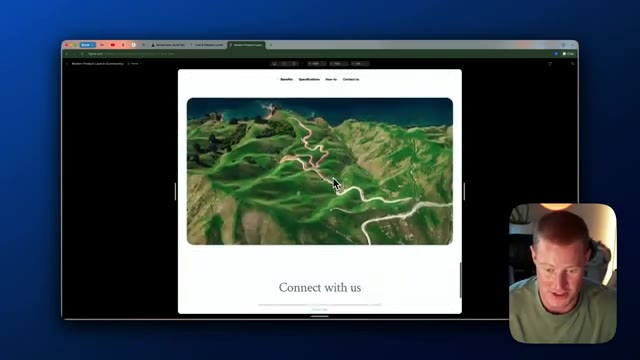
🔍 Agrandir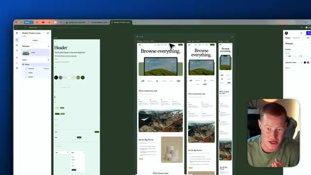
🔍 AgrandirEt ce que je vais faire, c'est que je vais revenir aux fichiers dans Figma. Je vais cliquer sur design et je vais essentiellement coller ceci dans un nouveau projet. Comme vous pouvez le voir ici, nous avons juste cette page d'accueil que nous allons essayer de transformer en un site Web fonctionnel. Très bien. Donc ensuite, ce que je vais faire, c'est que je vais cliquer sur le bouton de partage ici en haut à droite. Je vais cliquer sur copier le lien et je vais l'emmener sur notre plateforme de création d'applications web appelée Rocket. Donc si vous ne savez pas ce qu'est Rocket, Rocket vous permet en fait de créer des applications et des sites Web entièrement fonctionnels en utilisant l'IA et de simples invites textuelles comme certains de ces autres créateurs d'applications Web textuelles. Il y a ce bouton ici qui dit importer Figma.
Interface & Outils : Figma, Navigateur web (Rocket)
Contenu textuel & Code : Maquette de design de site web sur Figma, interface de génération de projet sur Rocket
Action / Démonstration : Navigation et présentation des maquettes graphiques destinées à être transformées en site web fonctionnel
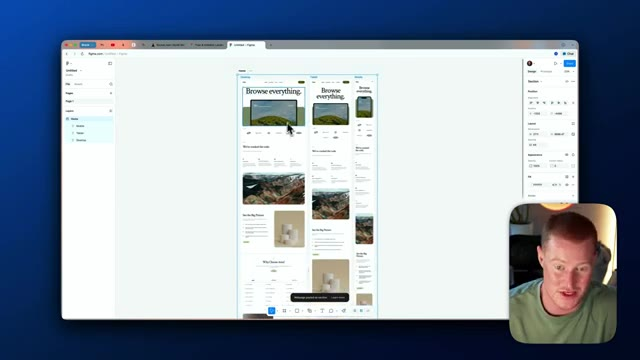
🔍 Agrandir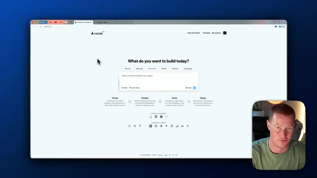
🔍 AgrandirTout ce que je vais faire, c'est cliquer là-dessus. Je vais coller ce lien que je viens juste d'obtenir dans Figma juste ici. Encore une fois, tout ce que vous avez à faire, c'est de cliquer sur partager et de cliquer sur copier le lien ici. Et ensuite, je vais le ramener dans Rocket et cliquer sur lancer l'importation. Maintenant, ce que Rocket va faire en arrière-plan, c'est essentiellement prendre ce modèle Figma ici avec tout ça. Il va le convertir en code. Il est donc capable de recréer cela de manière très similaire et ensuite nous aurons un modèle pour commencer réellement à construire notre site web, et ensuite le truc cool avec ça, vous vous demandez peut-être : Brock, en quoi c'est seulement utile ? Ce que je vais faire, c'est en gros l'importer dans Rocket et ensuite je pourrai tout simplement personnaliser l'ensemble de ceci
Interface & Outils : Navigateur web, plateformes Rocket.new et Figma.
Contenu textuel & Code : URL de partage Figma et structures de pages web maquettées (desktop, tablette, mobile). [DESC_IMAGE_3] Importation d'un lien de design Figma dans l'outil de génération de site web Rocket.new.
Action / Démonstration : Explications face caméra et analyse conceptuelle des marchés.
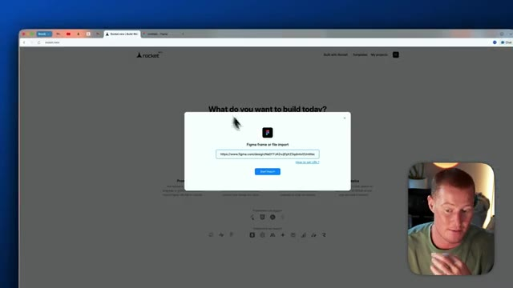
🔍 Agrandir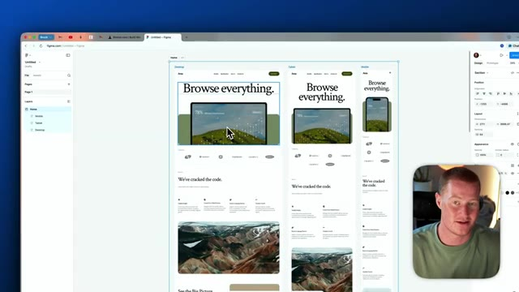
🔍 Agrandir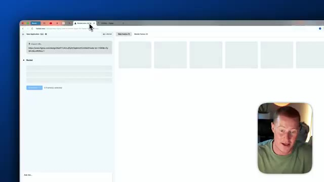
🔍 Agrandirsite web en utilisant des invites textuelles en langage naturel, ce qui signifie en gros que je tape du texte et qu'il effectue réellement des changements. Par exemple, au lieu que ceci dise « parcourir tout » ou d'avoir ce tableau de bord, je pourrais simplement écrire une consigne, je dirais « je veux que tu changes ce texte par ce texte différent » ou « je veux que tu changes ces logos par un logo différent ». Je vais vous montrer exactement comment faire cela dans cette vidéo, mais j'espère que cela répond à votre question : pourquoi est-ce seulement utile ? Et une chose que je tiens à mentionner, c'est que si vous maîtrisez déjà l'utilisation d'un outil comme Figma, cela devient une compétence vraiment considérable, car vous pouvez commencer à transformer des modèles que vous avez réellement conçus dans Figma en applications fonctionnelles maintenant, ce qui, si vous êtes designer, a pas mal d'impact, car
Interface & Outils : Navigateur web, Figma
Contenu textuel & Code : Maquettes de sites web, interfaces graphiques, sections de design d'interface utilisateur (UI)
Action / Démonstration : Présentation et démonstration de maquettes de sites web créées à l'aide d'outils de design.
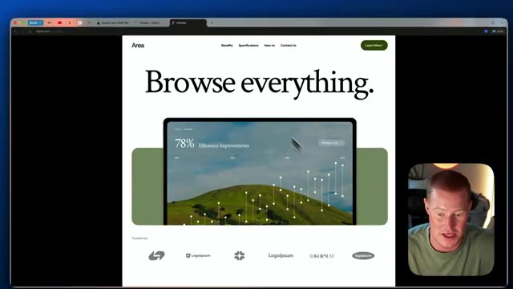
🔍 Agrandir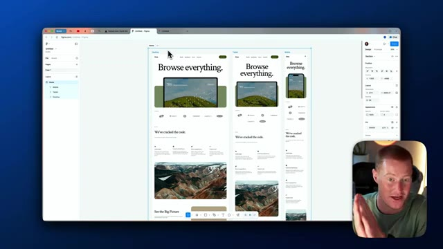
🔍 Agrandirensuite vous pourriez commencer réellement à montrer cela comme des prototypes à un client et vous l'avez juste fait avec l'IA. Donc l'étape suivante dans Rocket, tout ce que j'ai à faire est de sélectionner sur cette page ici. Petite parenthèse, si nous avions plusieurs pages différentes que nous voulions réellement connecter, nous cliquerions simplement sur ce bouton de partage et nous aurions plusieurs pages différentes ici à sélectionner, mais nous n'en avons qu'une pour ce cas d'utilisation. C'est juste la page d'accueil. Donc je vais cliquer dessus, cliquer sur démarrer l'importation. Et cela demande fondamentalement comment nous voulons personnaliser notre pile technologique. Je ne suis pas un développeur. Je ne sais pas vraiment.
Interface & Outils : Interface web de l'outil Rocket (convertisseur Figma vers code) affichée dans un navigateur, avec une incrustation vidéo du présentateur en bas à droite.
Contenu textuel & Code : URL d'importation Figma, options de sélection de frames web et mobiles, et boutons de conversion.
Action / Démonstration : Le présentateur sélectionne et manipule les frames de conception importées depuis Figma pour préparer leur conversion en code.
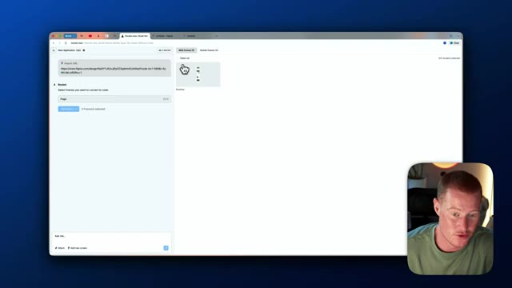
🔍 Agrandir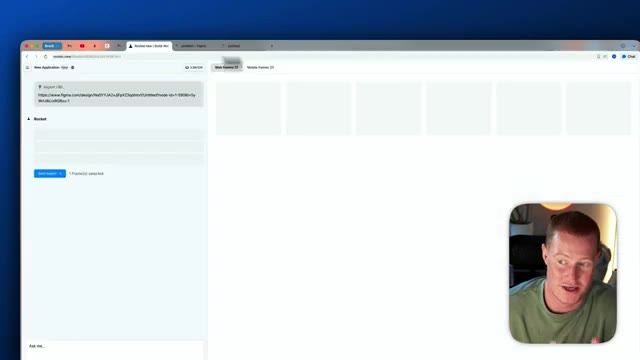
🔍 AgrandirDonc ce que je vais faire, c'est simplement cliquer sur Next.js à partir de là. Je vais juste cliquer sur JavaScript comme langage, un peu de patience, nous avons presque terminé ce processus. Et ensuite, à partir de là, je vais cliquer sur Tailwind CSS. Donc maintenant, ce qu'il fait, c'est qu'il récupère réellement ce design Figma. Comme vous pouvez le voir ici, il montre ce processus. Il télécharge ces images d'écran. Il va optimiser les groupes et les calques, télécharger les éléments de design, tout ça. Et ensuite, il va commencer à écrire du code. C'est la puissance d'utiliser une plateforme comme Rocket. Il est capable de coder avec du langage naturel, alias le "vibe coding". Ensuite, on nous présente ce prompt ici.
Interface & Outils : Navigateur web affichant l'application Rocket / outil de conversion de design en code.
Contenu textuel & Code : Options de configuration de la pile technique (Tech stack), choix du framework (Next.js), du langage (JavaScript), du système de design (Tailwind CSS) et étapes de progression (Fetching Figma, Writing Code).
Action / Démonstration : Configuration des options techniques et lancement de l'importation et de la génération du code à partir des designs Figma.
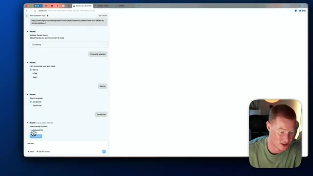
🔍 Agrandir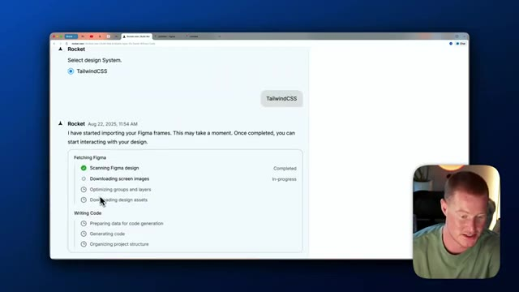
🔍 AgrandirDonc ça dit que ça prendra cinq à sept minutes pour construire selon notre demande. Donc je vais laisser Rocket faire son travail et on se retrouve une fois que ce sera terminé. Je dois dire que ça ne devrait pas, ça ne sera probablement pas parfait, mais nous pourrions facilement apporter des modifications et rendre ça phénoménal. Très bien les gars, donc j'ai donné environ cinq minutes et voici ce que nous avons réellement obtenu de Rocket. Nous voyons sur le côté gauche que nous avons notre interaction avec Rocket et ensuite sur le côté droit nous avons effectivement notre site web ici. Laissez-moi jouer un peu avec ça et voir à quel point c'est fonctionnel. Nous avons ceci de très similaire, en fait vous savez quoi je vais faire, je vais montrer côte à côte ici donc nous
Interface & Outils : Navigateur web affichant l'application de génération de code et de design Rocket.
Contenu textuel & Code : Étapes de génération (scanning Figma design, downloading screen images, generating code) et interface utilisateur générée automatiquement.
Action / Démonstration : Attente de la fin de la génération et visualisation du résultat final de la page web créée par l'intelligence artificielle.
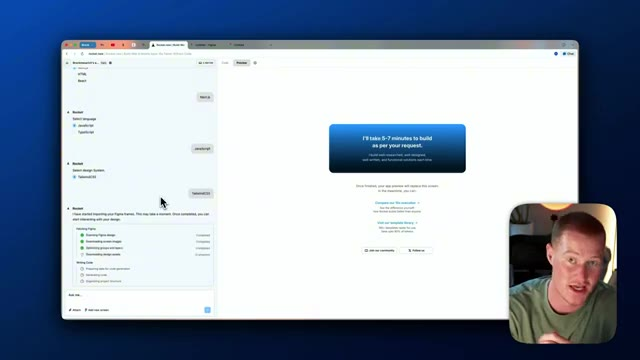
🔍 Agrandir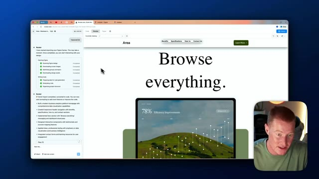
🔍 Agrandirobtenir une meilleure comparaison. Très bien. Donc sur le côté gauche, nous avons Rocket. Sur le côté droit, nous avons en fait celui qui a réellement été généré à l'intérieur de Figma. Donc laissez-moi faire défiler vers le bas jusqu'à Rocket. Donc ça a l'air très, très similaire. Vous pouvez voir que la mise en page est un peu différente en ce qui concerne cet en-tête "parcourir tout" ici, mais c'est un point de départ vraiment solide. Et nous pouvons maintenant y apporter des modifications très simplement juste en tapant du texte. Donc laissez-moi continuer à faire défiler vers le bas ici. Le formatage est légèrement décalé, mais encore une fois, c'est un très bon début. Donc ce que je vais faire maintenant, c'est que je vais commencer à apporter des modifications à l'intérieur de Rocket sur notre site web. Donc dès le départ, ce que nous pouvons faire, c'est que si nous voulons changer ce texte pour le mettre sur la même ligne,
Interface & Outils : Interface web de Rocket.new et Figma affichée dans un navigateur avec webcam du présentateur en incrustation.
Contenu textuel & Code : Pages web comparant le design original Figma et le résultat généré par l'IA avec des sections de contenu textuel et visuel.
Action / Démonstration : Le présentateur fait défiler la page web pour comparer les différentes sections générées par rapport au design d'origine.
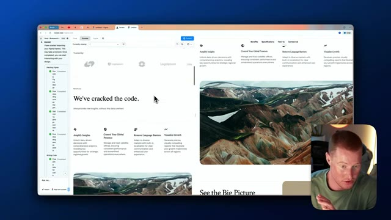
🔍 Agrandir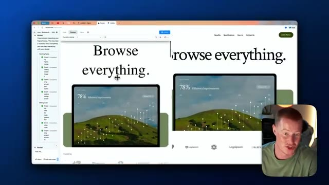
🔍 Agrandir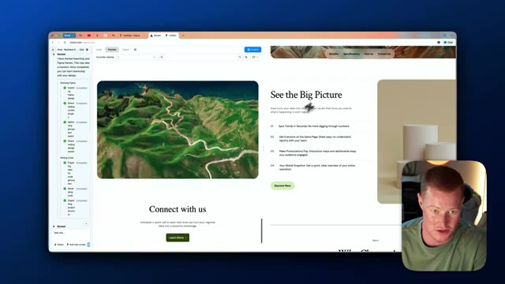
🔍 Agrandirjuste comme cette maquette Figma, nous pouvons venir ici, cliquer sur sélectionner l'édition et réellement sélectionner l'en-tête ici. Nous pourrions donc sélectionner différents composants d'interface utilisateur à l'intérieur de Rocket, puis fondamentalement lui dire de changer. En gros, je vais cliquer sur cet en-tête et dire, faisons tenir le texte sur une seule ligne et en lui donnant un prompt textuel très simple comme ça. Maintenant, Rocket devrait commencer à apporter cette modification simple à notre application et nous pourrions faire cela pour tous les petits changements que nous avons.
Interface & Outils : Interface web de l'outil Rocket / application de génération de code à partir de maquettes Figma.
Contenu textuel & Code : Panneau latéral de configuration et de modification de code, arborescence d'importation Figma, aperçu d'une page web avec graphiques de données et typographie. [DESC_ACTION_2] Sélection et modification d'éléments d'interface utilisateur dans l'aperçu du site web généré par l'IA.
Action / Démonstration : Explications face caméra et analyse conceptuelle des marchés.
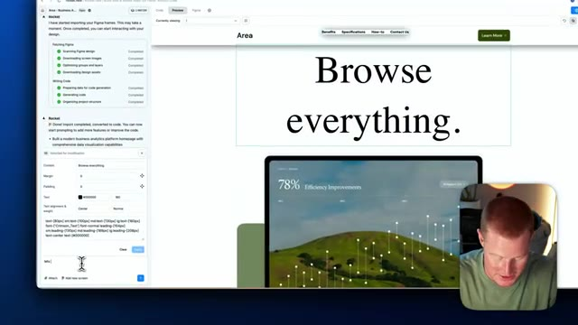
🔍 Agrandir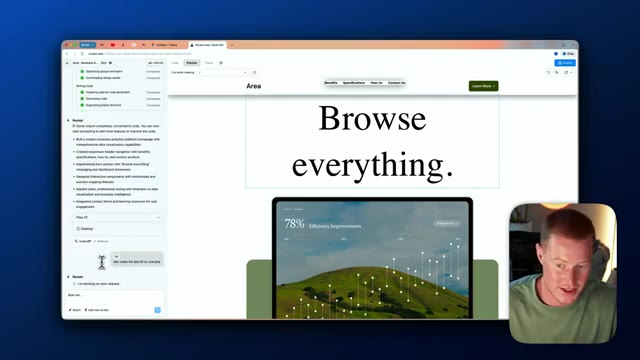
🔍 AgrandirBoum, et voilà, en l'espace d'environ 15 secondes, nous avons maintenant cette texture correctement formatée et en gros ce qu'on pourrait faire maintenant c'est qu'on pourrait alors commencer à rendre ces boutons de notre application fonctionnels pour qu'ils nous emmènent vraiment quelque part au lieu que ce soit juste, vous savez, juste un bouton non fonctionnel ici. Voici donc le prompt que je lui ai donné. En utilisant exactement le même thème, la même police, les mêmes couleurs, etc. pour notre site web, ajoutons maintenant une autre page appelée En savoir plus. Cela en dira plus sur qui nous sommes en tant qu'entreprise une fois qu'ils auront cliqué sur le bouton en savoir plus et cela les y amènera réellement. Nous voulons rendre ce bouton fonctionnel ici. J'espère donc que cela va vraiment le faire. Ce que ça va commencer à faire, c'est que ça va aller de l'avant et ajouter une nouvelle page dans notre
Interface & Outils : Navigateur web, interface de l'outil de développement d'application web (Rocket.new).
Contenu textuel & Code : Code source associé (page.jsx), instructions textuelles demandant l'ajout d'une nouvelle page et de rendre les boutons fonctionnels.
Action / Démonstration : Saisie d'un nouveau prompt pour modifier l'application web et connecter les boutons de navigation.
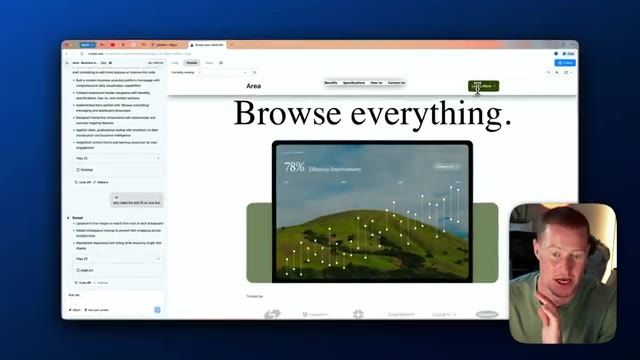
🔍 Agrandir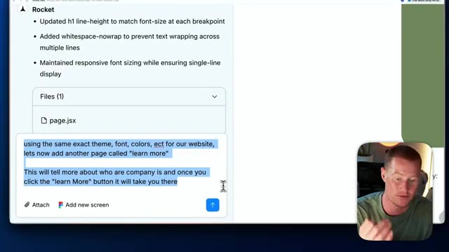
🔍 Agrandir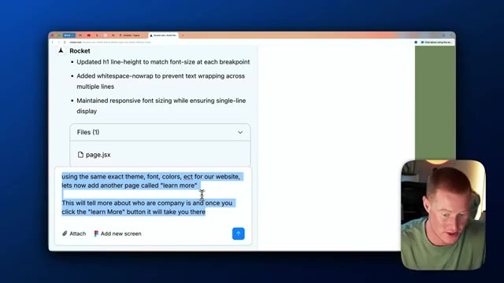
🔍 Agrandirapplication qui, en gros, quand nous cliquons sur ce bouton, nous y emmène. Donc au lieu que ce soit juste, vous savez, ce modèle très basique que nous avons créé dans Figma, nous commençons réellement le processus de transformer ceci, un modèle simplifié, en un site Web complet et entier. Très rapidement, en plus de construire réellement un site Web entièrement fonctionnel à partir d'un design Figma, je vais également vous montrer comment publier ce site Web en littéralement un clic. Et c'est vraiment simple à faire. Donc avant de vous montrer réellement comment publier ceci, allons voir si cela a effectué ces changements. Donc si je clique sur ce bouton en savoir plus maintenant, cela m'amène maintenant vers une nouvelle page, transformer les données en avantage stratégique.
Interface & Outils : Navigateur web affichant une application de création de site web / outil de prototypage IA.
Contenu textuel & Code : Page web générée affichant le texte "Browse everything.", un graphique de performance (78% Efficiency Improvements) et des options de navigation.
Action / Démonstration : Présentation de la transition du prototype vers un site web complet et fonctionnel.
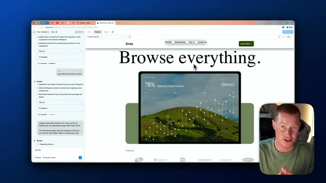
🔍 AgrandirCe que je pourrais faire si j'avais vraiment un site web que j'essaye de construire ici, je donne simplement les informations pour l'entreprise que j'ai, et cela personnaliserait réellement ces informations en fonction, vous savez, exactement de ce que j'essaye de construire ici. Laisse-moi aller de l'avant et lui fournir des données afin qu'il puisse réellement personnaliser ceci en fonction du logiciel réel que nous essayons de promouvoir ici sur notre site web. Très bien, donc j'ai pris les devants et j'ai effectivement fourni un certain contexte sur cette entreprise pour laquelle nous essayons de créer un site web. J'ai donc dit, pour la page en savoir plus, voici quelques informations sur notre entreprise.
Interface & Outils : Interface de développement web (Rocket New / outil de création de site assisté par IA) avec panneau latéral de chat et d'arborescence de fichiers.
Contenu textuel & Code : Arborescence de fichiers JSX (`learn-more/page.jsx`, `app/page.jsx`, `Header.jsx`) et saisie de prompt textuel décrivant l'entreprise TrailSafe AI.
Action / Démonstration : Saisie d'informations textuelles dans l'outil d'IA pour personnaliser le contenu du site web en cours de construction.
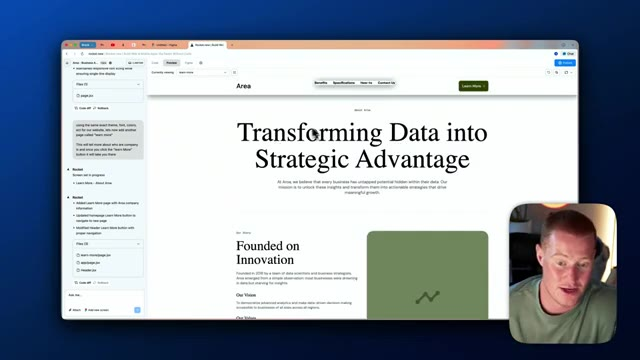
🔍 Agrandir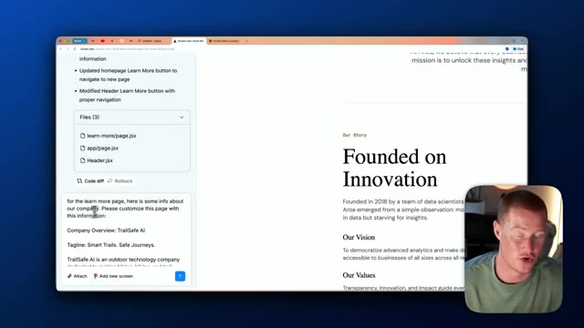
🔍 AgrandirVeuillez personnaliser cette page avec ces informations. L'entreprise est donc TrailSafeAI, le slogan est Sentiers intelligents, voyages sûrs, et cela résume essentiellement notre mission, notre lieu de fondation, son fonctionnement, tout ce genre de choses. Je vais donc envoyer ceci à Rocket et, espérons-le, cela devrait commencer à personnaliser cette page de notre site Web en fonction de tout ce contexte que j'ai fourni.
Interface & Outils : Interface de l'outil de développement web no-code/AI Rocket.new et aperçu de page web.
Contenu textuel & Code : Texte de présentation de l'entreprise TrailSafeAI, nom des fichiers de code JSX (learn-more/page.jsx, app/page.jsx, Header.jsx) et description du fonctionnement de l'application.
Action / Démonstration : Modification et personnalisation du contenu textuel de la page web avec les informations de l'entreprise TrailSafeAI via l'assistant IA.
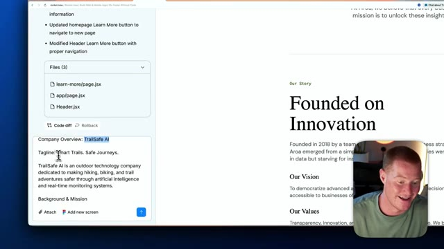
🔍 Agrandir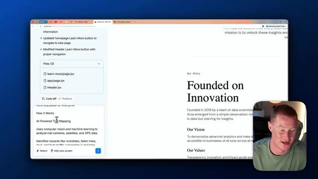
🔍 Agrandir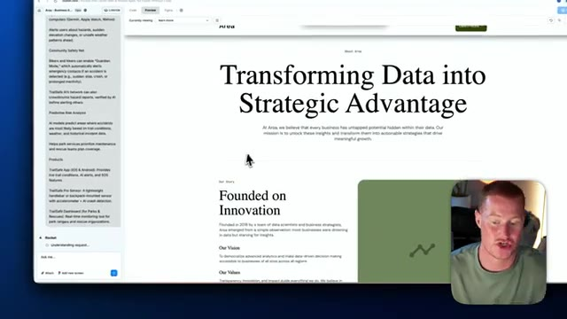
🔍 AgrandirTrès bien, après environ une minute, nous avons en fait cette nouvelle page sur notre site web maintenant appelée Smart Trails Safe Journeys. Et elle détaille essentiellement notre histoire en fonction des informations que je lui ai fournies ici, fondée en 2021 à Boulder, dans le Colorado. Et comme vous pouvez le voir, cela se reflète ici sur notre site web, fondée en 2021 à Boulder, dans le Colorado, détaillant notre mission, nos valeurs, comment ça fonctionne, l'intelligence des sentiers propulsée par l'IA, tout ce truc.
Interface & Outils : Navigateur web affichant une page de site internet (Rocket.new / Figma).
Contenu textuel & Code : Texte du site web 'Smart Trails. Safe Journeys.' et 'Outdoor Innovation Meets Space Technology' avec la mention 'Founded in 2021 in Boulder, Colorado'.
Action / Démonstration : Navigation et défilement sur la page web en cours de création pour présenter le contenu textuel.
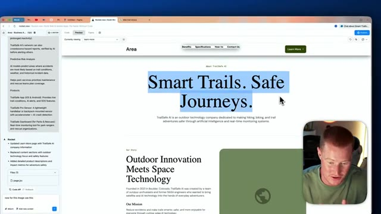
🔍 Agrandir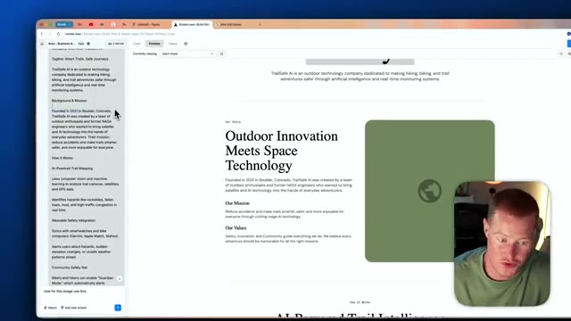
🔍 Agrandir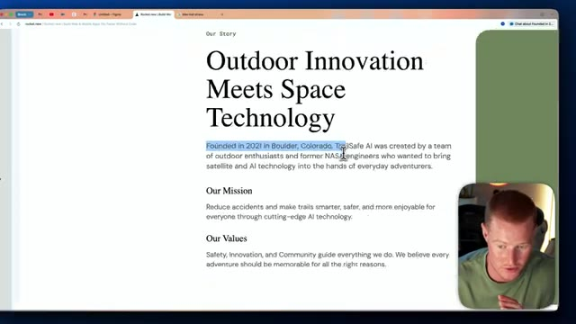
🔍 AgrandirDonc maintenant, nous avons réellement un site Web adapté à notre entreprise à partir d'un design Figma que nous avions déjà comme modèle, et nous le transformons ici en un site Web réellement pleinement fonctionnel. Celui-ci, comme vous pouvez le voir, n'a pas d'image. Laissez-moi donc rapidement ajouter une image et vous montrer à quel point nous pouvons faire cela facilement. Encore une fois, je vais cliquer sur la fonction de sélection et d'édition ici. Je vais cliquer sur cette division et je vais dire que nous voulons utiliser cette image ici et je vais simplement télécharger ceci sur Rocket et en environ 20 secondes ou à peu près, nous devrions avoir une mise à jour de ceci.
Interface & Outils : Navigateur web affichant l'éditeur du site web et la webcam du présentateur en incrustation.
Contenu textuel & Code : Maquette de site web intitulée 'TrailSafe AI' avec des sections de texte explicatives et des options de personnalisation d'image.
Action / Démonstration : Le présentateur montre l'intégration et la configuration d'éléments visuels sur le site web en développement.
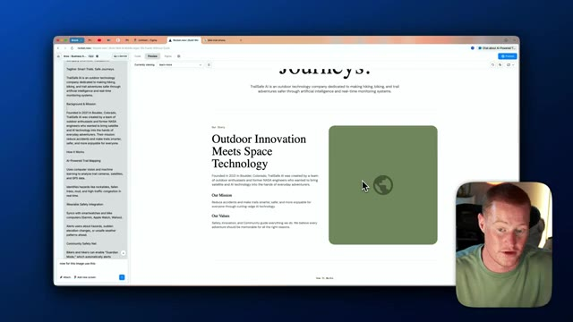
🔍 Agrandir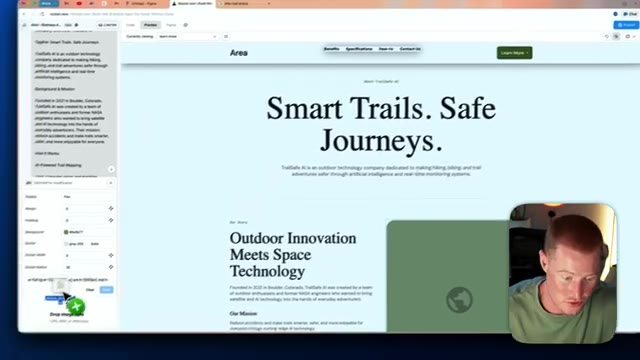
🔍 AgrandirTrès bien. Donc maintenant nous avons notre site web et nous avons ajouté cette image ici. Donc vous pouvez maintenant commencer à voir à quel point il est facile de commencer réellement à ajouter des modifications à notre site web ou à notre application à partir de cette conception Figma avec laquelle nous avons réellement commencé à l'intérieur de Rocket. Et puis très rapidement, petite astuce, si vous voulez ajouter différents composants d'interface utilisateur, tout comme vous pouvez le voir ici, vous pouvez voir que j'ai changé cette section principale ici. Donc le texte a en fait ce petit effet de flou. Genre, est-ce que ça n'a pas l'air plutôt cool ? Donc j'ai utilisé 21st.dev pour faire ça. Je suis juste venu ici.
Interface & Outils : Navigateur web, outil de développement web Rocket.new, éditeur de code source, prévisualisation Figma.
Contenu textuel & Code : Code source JavaScript/React, aperçu du site web "TrailSafe AI", structure des fichiers du projet.
Action / Démonstration : Navigation et démonstration des modifications apportées au site web à partir d'une conception Figma.
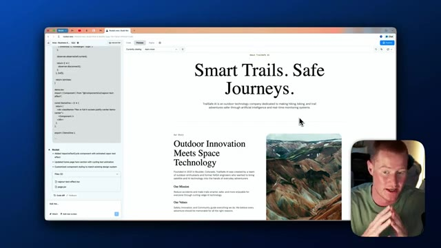
🔍 Agrandir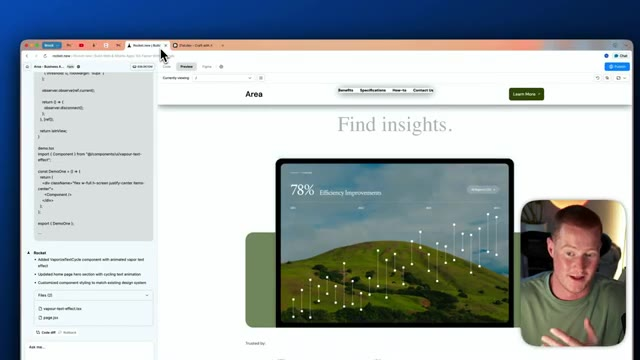
🔍 Agrandir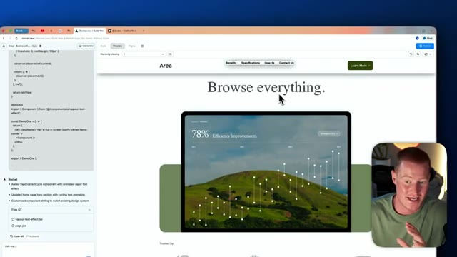
🔍 AgrandirJ'ai fondamentalement pris un composant d'interface utilisateur à partir de là. Et ouais, je l'ai fondamentalement ajouté à notre application. Donc maintenant qu'on a effectivement construit notre site web, allons-y et publions ça. Pour le publier, tout ce qu'on a à faire c'est de venir ici et de cliquer sur ce bouton bleu "publier". Tu peux voir que je l'ai déjà publié. Tu cliquerais juste sur publier et on pourrait même ajouter un domaine personnalisé. De cette façon, ça a sa propre URL spécifique.
Interface & Outils : Navigateur web, outil de développement web et d'IA (vibe coding / builder), interface utilisateur de prévisualisation.
Contenu textuel & Code : Code source React/JSX dans le panneau latéral, fichiers du projet (vapour-text-effect.tsx, page.tsx), interface de prévisualisation du site web. [DESC_IMAGE_3] Navigation dans l'interface de développement, ajout de composants UI et publication du site web créé.
Action / Démonstration : Explications face caméra et analyse conceptuelle des marchés.
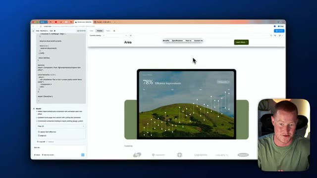
🔍 Agrandir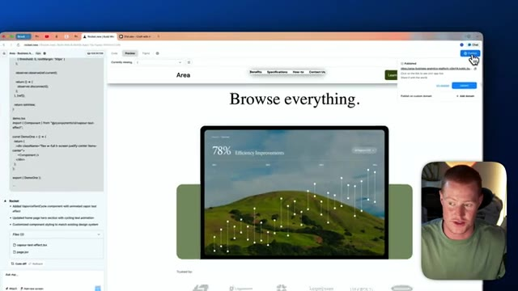
🔍 Agrandir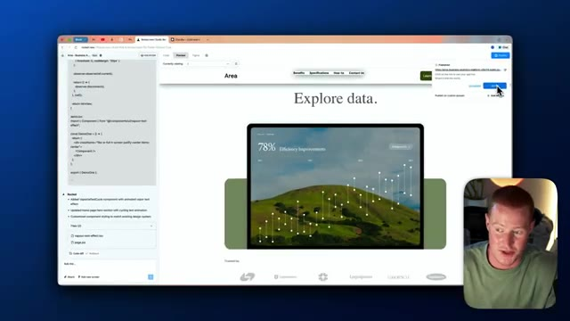
🔍 AgrandirEt c'est aussi simple que ça, si je viens sur cette URL ici, vous pouvez maintenant voir notre site web en direct avec toutes ces informations que nous avons fournies. Et nous avons fait tout cela en utilisant Figma et Rocket. J'espère que vous avez tiré de la valeur de cette vidéo. C'était une vidéo très attendue par vous les gars. Vous m'avez demandé de faire cela, donc je suis heureux d'avoir pu vous l'apporter. Si vous n'êtes pas déjà abonnés, abonnez-vous à la chaîne.
Interface & Outils : Navigateur web affichant un site internet créé via Figma et Rocket.
Contenu textuel & Code : Page web responsive contenant des sections de texte, des images paysagères et des graphiques statistiques stylisés.
Action / Démonstration : Navigation et présentation du site web finalisé en direct dans le navigateur.
Je couvre tout ce qui touche à l'IA pour les non-techniciens, vous tenant informés de toutes les nouvelles tendances en matière d'IA. Cela étant dit, les gars, merci d'être restés jusqu'à la fin, et j'espère vous voir dans la prochaine.
Interface & Outils : YouTube (page de la chaîne).
Contenu textuel & Code : Miniatures de vidéos liées à l'IA, outils no-code et applications mobiles.
Action / Démonstration : Conclusion de la vidéo et incitation à s'abonner.